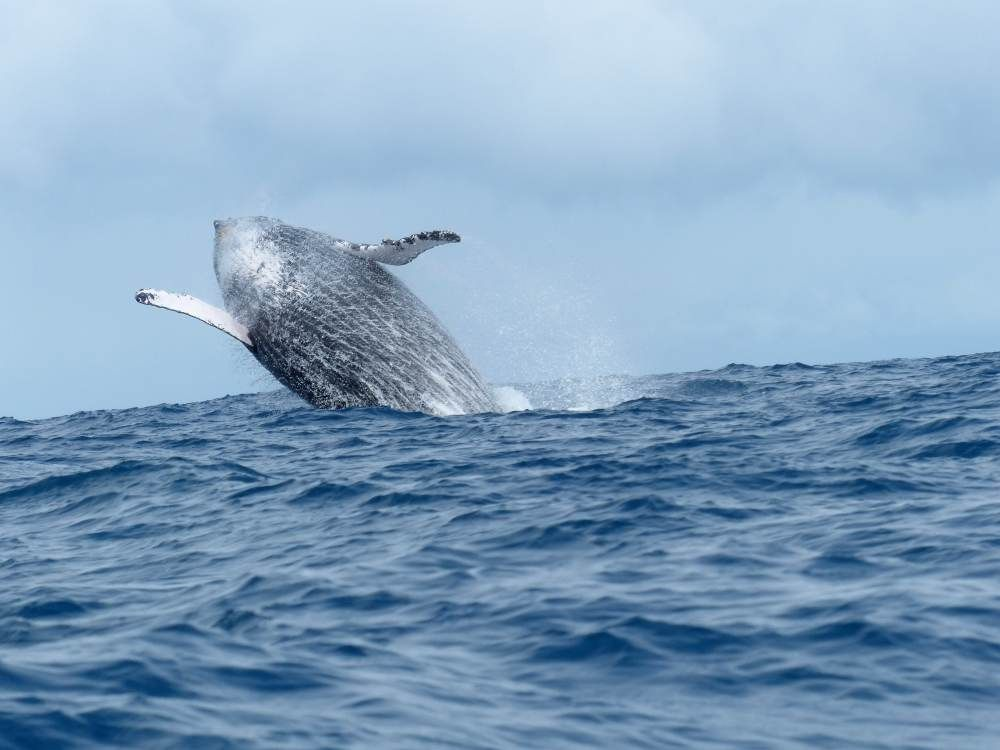

Voyage actif – Pour ceux qui aiment bouger !

A la recherche d’un type de sport spécifique à exercer dans un environnement un peu rudimentaire ? Madagascar offre des opportunités intéressantes !
Kitesurf, parapente et escalade en eau vive, l’adrénaline s’engouffre dans tous les pores. Sans oublier l’escalade, la plongée ou l’équitation !!
Tous les détails de ce voyage au format PDF
Ces sports ne peuvent être pratiqués qu’à certaines conditions, et avec une bonne préparation. La question de la sécurité doit également être attentivement examinée au préalable. Beaucoup de sports extrêmes peuvent être réalisés dans des endroits reculés. Toutefois, les fournisseurs locaux ne disposent la plupart du temps que d’un équipement limité. Voyager avec une planche de surf à Madagascar est un vrai défi !
Il existe désormais des centres ou clubs de plongée disposant d’un équipement correct dans plusieurs sites côtiers de Madagascar. Le Kitesurf ou le parapente, par contre, ne sont possibles qu’à peu d’endroits.
A Madagascar, l’élevage de chevaux est à nouveau en plein essor.
Des randonnées équestres d’une journée permettent d’explorer les environs d’une écurie. La version moderne d’une randonnée à cheval est l’excursion en quad. D’ailleurs, les « quadistes » confondent souvent leur véhicule avec une monture du Far West et galopent librement à travers tout le pays. Malheureusement, les sabots des pneus laissent derrière eux des traces que la nature répare difficilement…
En revanche, le trekking, la grande randonnée ou la simple randonnée pédestre sont des activités très adaptées à Madagascar, qu’il s’agisse de randonnées d’une journée ou de trekking hardcore d’une semaine. Seul le saut à l’élastique n’existe pas encore à Madagascar : il n’existe pas de ponts appropriés…
Souhaitez-vous des vacances actives, ou planifier un voyage à Madagascar pour pratiquer exclusivement votre sport favori ? Alors, informez-nous de vos souhaits, et nous vous créerons un programme de voyage personnalisé, spécialement adapté à vos attentes.
Baleines

Durant cette période, un impressionnant ballet nous est offert : imaginez une baleine de 15 mètres de long, surgissant hors de l’eau, puis se laissant tomber de toute sa masse, en frappant la surface de l’eau de sa nageoire caudale ! Ou alors créant une véritable fontaine en expirant ! Des moments inoubliables attendent à coup sûr les voyageurs le long de la Côte Est de Madagascar et aux abords de l’Ile Sainte-Marie…